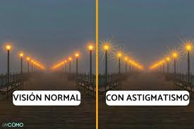

Degeneración macular relacionada con la edad
- Es una enfermedad ocular que afecta la mácula.
- Se presenta en dos formas:
- DMRE seca: adelgazamiento gradual de la mácula.
- DMRE húmeda: crecimiento de vasos sanguíneos anormales.

Ambliopía (ojo perezoso u ojo vago)
- Es una condición visual en la que uno de los ojos no desarrolla una visión normal durante la infancia.

Astigmatismo
- Es un error de refracción que provoca visión borrosa o distorsionada.
- Ocurre cuando la córnea o el cristalino tienen una forma irregular.
Cataratas
- Son una afección en la que el cristalino se vuelve opaco.
- Esto afecta la visión, provocando visión borrosa o difusa.